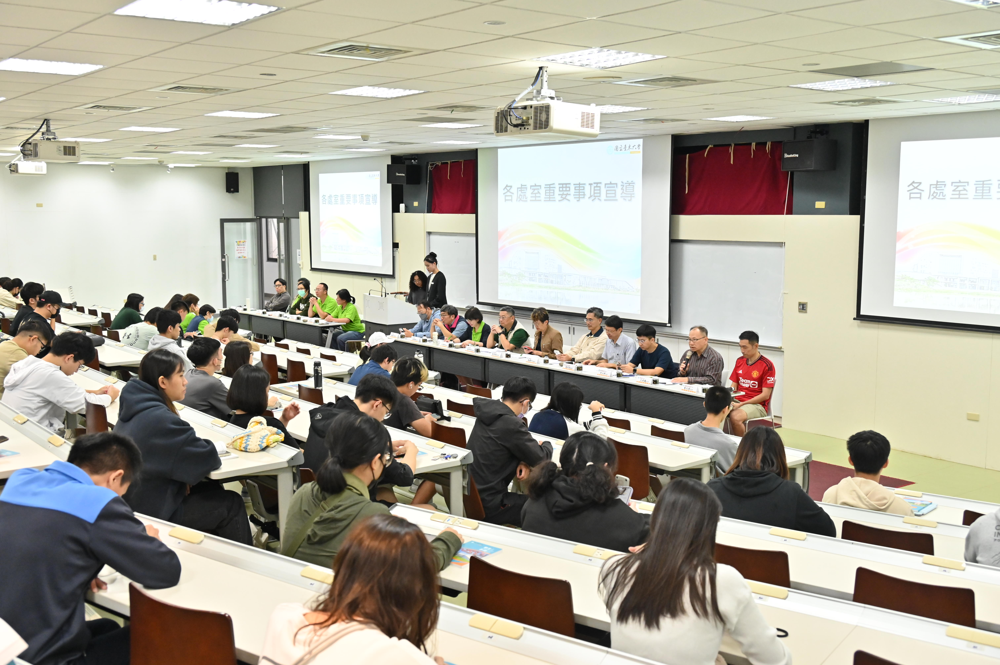
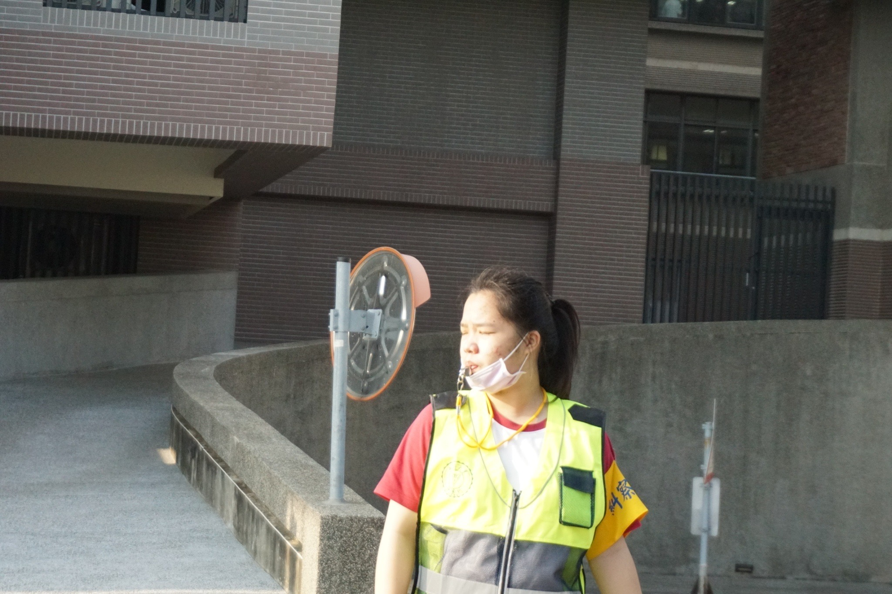

大學經歷
射過劍
體驗原住民文化
稍縱即逝
採過月桃
"南島文化概論" 上山去
新鮮體驗
做過香水
跟著學校出去玩
試聞各式各樣的精油
成功調製一罐香水
編過藤編
"文化觀光" 動手做
太有挑戰性了
上過攝影課
跟著學校一起學
學了但不多
我是唐以恩
我來自台中
畢業於東大附中
目前就讀國立台東大學
綠能與資訊科技學系
個性 開朗 外向 沉穩 冷靜
做事能夠迅速且有條理地完成
喜歡挑戰新事物
我是哪裡人
我可以是...
雲林人
桃園人
台中人
反正我來自台灣
| 大一上 | 環境科學 |
| 運動與健康 | |
| 中文閱讀與寫作 | |
| 大一英文 | |
| 化學實驗 | |
| 物理實驗 | |
| 普通生物學 | |
| 普通化學 | |
| 普通物理 | |
| 計算機概論 | |
| 微積分 |
| 大一下 | 管理學 |
| 運動與健康 | |
| 中文閱讀與寫作 | |
| 大一英文 | |
| 化學實驗 | |
| 物理實驗 | |
| 普通生物學 | |
| 普通化學 | |
| 普通物理 | |
| 程式設計 | |
| 微積分 |
| 大二上 | 醫學與健康 |
| 文化觀光 | |
| 通識教育講座課程 | |
| 熱力學 | |
| 數位電路設計 | |
| 電路學 | |
| 物件導向程式設計 | |
| 綠色科技及實作 | |
| 工程數學 |
| 大二下 | 氣候變遷與調適 |
| 南島文化概論 | |
| 大二英文 | |
| 電路設計與應用 | |
| 電子學 | |
| 工程數學 | |
| 網頁程式設計 | |
| 能源管理系統 | |
| 資料結構 |
射過劍
體驗原住民文化
稍縱即逝
採過月桃
"南島文化概論" 上山去
新鮮體驗
做過香水
跟著學校出去玩
試聞各式各樣的精油
成功調製一罐香水
編過藤編
"文化觀光" 動手做
太有挑戰性了
上過攝影課
跟著學校一起學
學了但不多
宿營副召

規劃流程、協助帶領活動
綠資日司儀
主持典禮
班代
參與班級事務
泳渡日月潭
挑戰自我
渺小的我 跳進廣闊的潭
潛水
挑戰自我
就是人生新體驗
辯論社
邏輯思維能力
糾察隊
耐操吃苦
系學會
帶領活動、規劃流程
拍照 旅遊
我喜歡用鏡頭記錄旅程，也享受發掘在地風景與文化。綜藝節目
是因為跟下一集沒有連續,可以隨時暫停💢 討厭動物
天上飛 地上爬 水裡游
❤️ 探索食物
各式各樣的種類😝 嘗試
把握給自己的一次機會✔️ 學術研究能力
僅熟悉文獻查找與基礎書寫能力✔️ 表達能力
口語大致清晰，具簡報經驗與架構邏輯✔️ 問題解決能力
具備邏輯思考與應變能力✔️ 團隊合作與溝通
參與系學會與活動✔️ 工具應用能力
熟悉 Excel、Canva、簡報製作✔️ 英文能力
能閱讀相當基礎英文資料，聽說能力十分有待加強